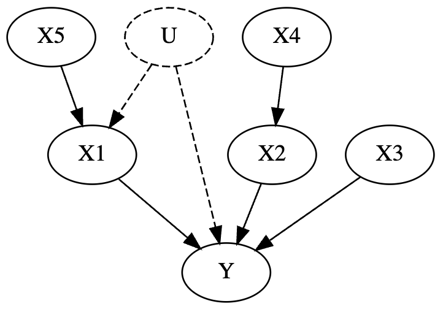
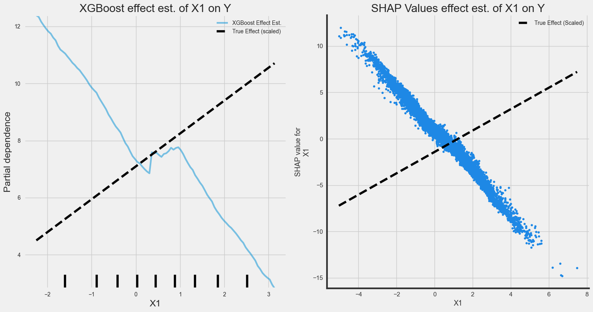
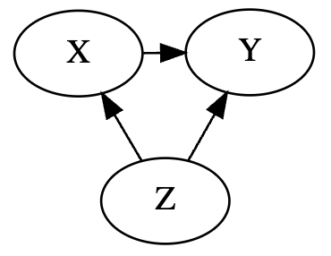
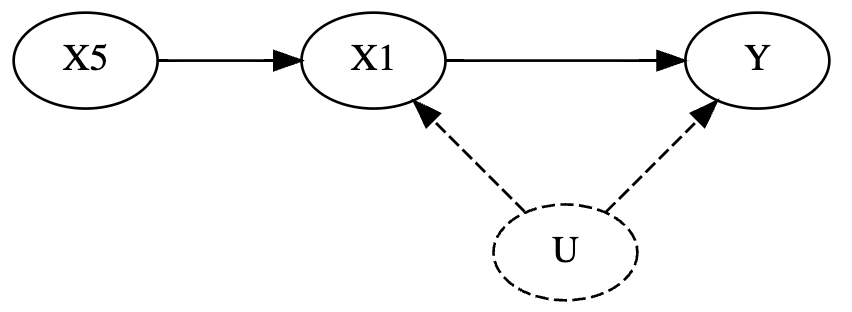
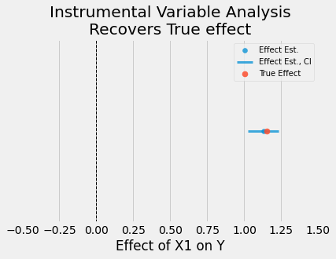
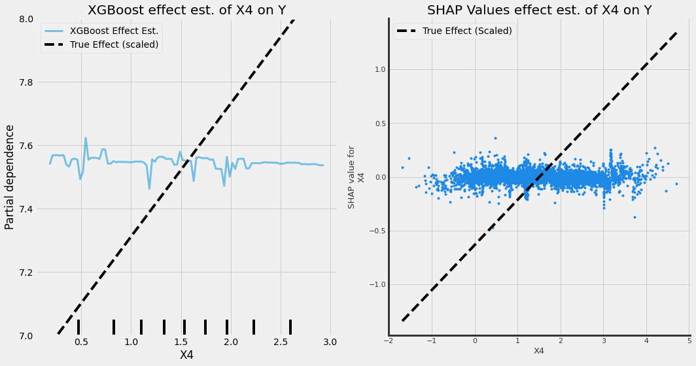
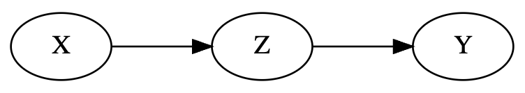
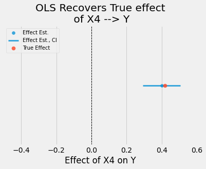

Explainable AI is all the rage these days. Black box ML models come along with some fun tools such as LIME, SHAP, or Partial Depence Plots that try to give visibility into how the model is interpreting data and making predictions. It’s a common misconception that these are causal inference techniques - sadly we’ve all been mislead.
We’re going to walk through an example that shows these tools fall victim to the same rules of causal inference as everything else. A confound is still a confound, and if you want to measure some causal effect there’s still no way around that without careful deliberation of which variables to include in your models.
The code for this blogpost can be found here
Starting simple: simulating some fake data
Let’s start with a simple scenario. Our goal is to estimate some causal effects. We’re going to simulate out data ourself so we know the true causal effects. We can see how good some popular “explainable AI” algorithms actually are at causal inference. We’ll simulate data from the following DAG:

What’s a DAG? A dag is a directed acyclic graph, or fancy talk for a flowchart that goes in 1 direction. It’s really just a diagram of a true data generating process. They’re typically assumed based on domain knowledge (like all models), although ocassionally there are some validation checks you can perform.
Edges in the graph are assumed to be true causal effects. So for example,
X3influencesYX5influencesX1which influencesY- Some unobserved variable
Uinfluences bothX1andY. By unobserved, what I mean is that its some variable we don’t have data for.
For those familiar with causal inference, this DAG in particular is also riddled with confounds.
Ok back on track. We’ll get out one of the more popular Explainable AI tools nowadays, XGBoost. I’m going to start in the most dangerous way possible - I’m going to toss everything in the model.
Test 1: What’s the impact of X1 on Y?
We know for a fact that X1 influences Y. Let’s see how well Partial Dependence Plots and SHAP values do at identifying the true causal effect

These SHAP values arent just wrong, but the effect is in the wrong direction. The reason for this: there’s a Fork Confound.

Some variable Z confounds Xs true effect on Y.
A very common example of a fork confound is
warm weather (Z)on the relationship betweenice cream sales (X)andcrime (Y). Ice cream sales obviously have no influence on crime, but ice cream sales are higher during warmer weather, and crime is higher during warmer weather.
So back to our main point - Explainable AI can’t get around a fork confound. This is our first lesson on why SHAP / explainable AI is different from causal inference.
Luckily in this case, statistics can solve this problem.
Using some domain knowledge about the generating process, we notice an instrument, X5, that can be used to estimate the causal effect of X1 on Y

I won’t go into the details of instrumental variable analysis since the goal of this article is to highlight that Explainable AI can’t replace causal inference. To learn more about it, see Scott Cunningham’s Causal Inference the Mixtape.
But for now, I will show that a classic causal inference method succeeds where XGBoost and SHAP values fail
from linearmodels import IV2SLS
from src.dagtools import get_effect
# Instrumental variable analysis
iv_model = IV2SLS.from_formula("Y ~ 1 + [X1 ~ X5]", data=df).fit()
# pull true effect
true_effect = get_effect(DAG, "X1", "Y")
# Plot
fig, ax = plt.subplots(1,1,figsize=(6,4))
ax.set_title("Instrumental Variable Analysis\nRecovers True effect")
plot_model_estimate(iv_model, true_effect=true_effect, feat="X1", ax=ax)
As we can see, a simple statistics technique succeeds where explainable AI fails.
What about estimating the effect of X4 on Y?
This relationship is slightly more complicated, but certainly measurable. X4 influences X2 which influences Y. Here’s the DAG again for reference
The plots below show how well explainable AI does at estimating the causal effect of this relationship.

Unfortunately, they don’t pick up an effect at all! And if our goal was to increase Y we’d end up missing a pretty good lever for it. There’s another simple explanation here for why explainable AI: there’s a Pipe Confound

When trying to measure the effect of X -> Y, conditioning on Z (aka including it in a model as a covariate with X) ends up blocking inference.
For more details on how a Pipe confound works, I recommend chapters 5 and 6 of Richard McElreath’s Statistical Rethinking v2 (where I borrowed the example from as well).
The main things to note here are that pipes are common and Explainable AI doesn’t get around them.
We can recover an unbiased estimate of the true effect simply with OLS
# Fit simple OLS model
model = sm.OLS.from_formula("Y ~ X4", data=df).fit()
# pull true effect
true_effect = get_effect(DAG, "X4", "X2") * get_effect(DAG, "X2", "Y")
# Plot (see notebok for plot_model_estimate function)
fig, ax = plt.subplots(1,1,figsize=(6,4))
ax.set_title("Instrumental Variable Analysis\nRecovers True effect")
plot_model_estimate(model, true_effect=true_effect, feat="X4", ax=ax)
Can we use Explainable AI for causal inference at all?
We can! We just need to be deliberate in which variables we include in our models, and the only way to do that right is to use DAGs! The example below looks at an XGBoost model that doesnt condition on X2 (allowing us to estimate the causal effect of X4 -> Y).

Take Aways
Explainable AI is not some magic tool for causal inference. What these tools are good at is explaining why complicated models make the decisions they do. Explainable AI tools suffer from the same limitations for causal inference as all other statistical estimators.
At the end of the day when causal inference is your goal, nothing beats using DAGs to inform deliberate variable selection.
If you’re new to the subject, I highly recommend the following resources that will teach you how to use causal inference properly:
- Chapter’s 5 and 6 of Statistical Rethinking v2, by Richard McElreath
- Causal Inference for the Brave and True by Matheus Facure
- Causal Inference the Mixtape, by Scott Cunningham